👑 Nissan Skyline GT-R (R34)
1999 – 2002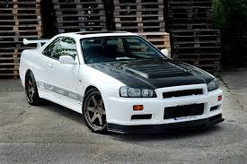
🔍 Klikni pro celé informace
Nissan Skyline GT-R R34 je jednou z největších ikon japonského inženýrství. Tento model proslul svým pokročilým pohonem všech kol a legendárním motorem RB26DETT. V popkultuře ho proslavila především herní série Gran Turismo a filmová série Rychle a zběsile.
| Motor: | Řadový šestiválec (RB26DETT) |
| Objem: | 2.6 litru (Twin-Turbo) |
| Výkon: | 206 kW / 280 koní |
| Pohon: | 4WD (ATTESA E-TS) |
| Převodovka: | 6-stupňová manuální |
🔥 Toyota Supra (A80)
1993 – 2002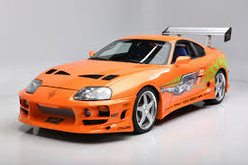
🔍 Klikni pro celé informace
Čtvrtá generace Toyoty Supra se stala synonymem pro nezničitelný výkon. Srdcem vozu je legendární motor 2JZ-GTE, který proslul litinovým blokem schopným bez větších úprav vnitřností snést obrovské nárůsty výkonu při tuningu.
| Motor: | Řadový šestiválec (2JZ-GTE) |
| Objem: | 3.0 litru (Twin-Turbo) |
| Výkon: | 243 kW / 330 koní |
| Pohon: | Pohon zadních kol (RWD) |
| Převodovka: | 6-stupňová manuální |
🌀 Mazda RX-7 (FD3S)
1992 – 2002🔍 Klikni pro celé informace
Mazda RX-7 FD je oceňována jako jedno z nejkrásnějších aut všech dob díky svému nadčasovému designu. Unikátní byla použitím rotačního Wankelova motoru a perfektním rozložením hmotnosti 50:50.
| Motor: | Wankelův rotační (13B-REW) |
| Objem: | 1.3 litru (Twin-Turbo) |
| Výkon: | 206 kW / 280 koní |
| Pohon: | Pohon zadních kol (RWD) |
| Převodovka: | 5-stupňová manuální |
🏎️ Honda NSX
1990 – 2005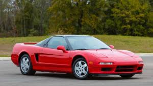
🔍 Klikni pro celé informace
Honda NSX kompletně změnila svět supersportů. Ukázala světu, že exotické auto s motorem uprostřed může být spolehlivé a použitelné pro každý den. Na ladění podvozku se podílel legendární pilot F1 Ayrton Senna.
| Motor: | Vidlicový šestiválec (V6 VTEC) |
| Objem: | 3.0 / 3.2 litru |
| Výkon: | 201 kW / 274 koní |
| Pohon: | Pohon zadních kol, motor uprostřed |
| Převodovka: | 5 / 6-stupňová manuální |
🚗 Toyota Chaser (JZX100)
1996 – 2001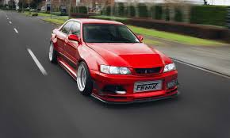
🔍 Klikni pro celé informace
Toyota Chaser ve sportovní specifikaci Tourer V je ikonický čtyřdveřový sedan, který si získal kultovní status v drifterské komunitě. Pod kapotou ukrývá skvělý motor 1JZ-GTE s jedním turbodmychadlem a technologií VVT-i.
| Motor: | Řadový šestiválec (1JZ-GTE) |
| Objem: | 2.5 litru (Single-Turbo) |
| Výkon: | 206 kW / 280 koní |
| Pohon: | Pohon zadních kol (RWD) |
| Převodovka: | 5-stupňová manuální |
🏁 Toyota Celica (ST205)
1994 – 1999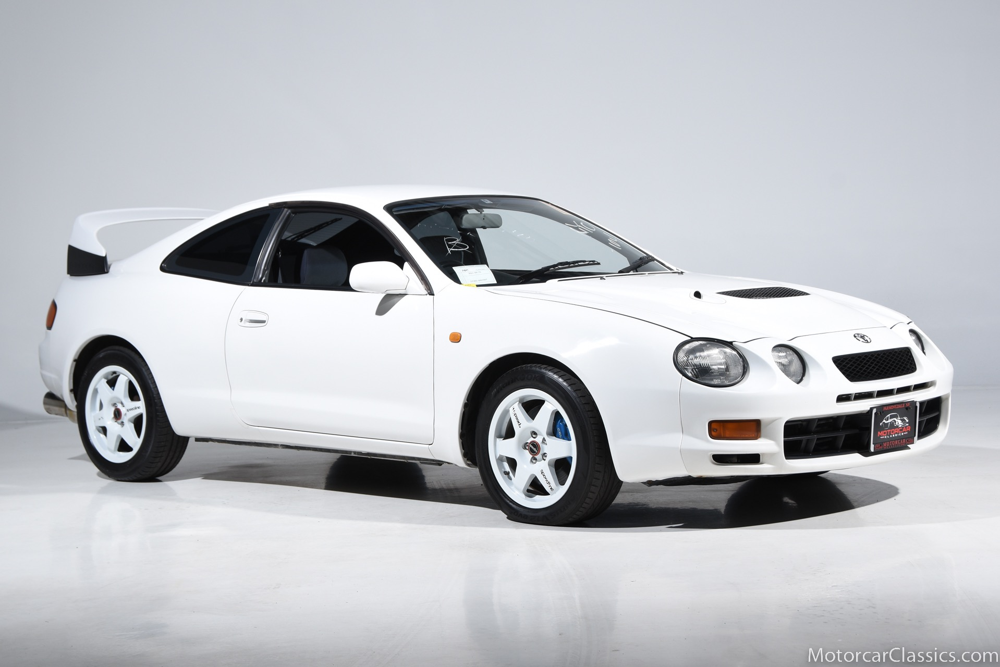
🔍 Klikni pro celé informace
Homologační speciál pro mistrovství světa v rally (WRC). ST205 byla nejvýkonnější verzí modelové řady Celica. Je proslulá svým stálým pohonem všech kol, pokročilým systémem přeplňování motoru 3S-GTE a agresivním spoilerem.
| Motor: | Řadový čtyřválec (3S-GTE) |
| Objem: | 2.0 litru (Turbo) |
| Výkon: | 178 kW / 242 koní |
| Pohon: | Stálý pohon všech kol (AWD) |
| Převodovka: | 5-stupňová manuální |
🛡️ Nissan Skyline GT-R (R33)
1995 – 1998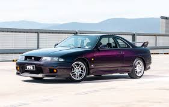
🔍 Klikni pro celé informace
Generace R33 přinesla oproti R32 delší rozvor a mnohem lepší stabilitu ve vysokých rychlostech. Stala se vůbec prvním sériově vyráběným vozem, který dokázal pokořit legendární německý okruh Nürburgring v čase pod 8 minut.
| Motor: | Řadový šestiválec (RB26DETT) |
| Objem: | 2.6 litru (Twin-Turbo) |
| Výkon: | 206 kW / 280 koní |
| Pohon: | 4WD (ATTESA E-TS) |
| Převodovka: | 5-stupňová manuální |
🦖 Nissan Skyline GT-R (R32)
1989 – 1994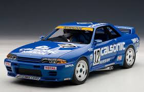
🔍 Klikni pro celé informace
Právě tato generace dala světu legendární přezdívku „Godzilla“. Vznikla v australském šampionátu cestovních vozů, kde tento vůz naprosto deklasoval veškerou domácí i evropskou konkurenci.
| Motor: | Řadový šestiválec (RB26DETT) |
| Objem: | 2.6 litru (Twin-Turbo) |
| Výkon: | 206 kW / 280 koní |
| Pohon: | 4WD (ATTESA E-TS) |
| Převodovka: | 5-stupňová manuální |
⚡ Honda Integra Type R (DC2)
1995 – 2001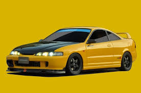
🔍 Klikni pro celé informace
Integra Type R je považována za nejlépe ovladatelnou předokolku v historii. Verze DC2 proslula svým extrémně točivým atmosférickým motorem B18C, odlehčenou karoserií bez tlumících materiálů a továrním samosvorným diferenciálem (LSD).
| Motor: | Řadový čtyřválec (B18C VTEC) |
| Objem: | 1.8 litru (Atmosférický) |
| Výkon: | 147 kW / 200 koní |
| Pohon: | Pohon předních kol (FWD) |
| Převodovka: | 5-stupňová manuální |
🔴 Mitsubishi Lancer Evolution IX
2005 – 2007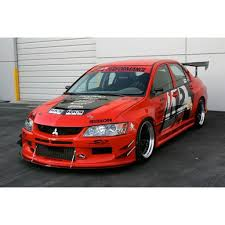
🔍 Klikni pro celé informace
Devátá generace legendárního "Eva" přinesla do ikonického motoru 4G63 technologii variabilního časování ventilů MIVEC. Společně s geniálním systémem pohonu všech kol Super AYC nabízí dodnes nepřekonatelnou trakci na jakémkoliv povrchu.
| Motor: | Řadový čtyřválec (4G63 MIVEC) |
| Objem: | 2.0 litru (Turbo) |
| Výkon: | 206 kW / 280 koní |
| Pohon: | Stálý pohon všech kol (AWD) |
| Převodovka: | 6-stupňová manuální |
🔵 Subaru Impreza WRX STI 22B
1998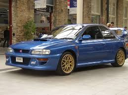
🔍 Klikni pro celé informace
Svatý grál pro fanoušky Subaru. Limitovaná edice 22B vznikla jako oslava 40. výročí automobilky a třetího titulu v řadě v šampionátu WRC. Vyrobilo se pouhých 400 kusů s rozšířenou karoserií a větším motorem EJ22.
| Motor: | Boxer čtyřválec (EJ22) |
| Objem: | 2.2 litru (Turbo) |
| Výkon: | 206 kW / 280 koní |
| Pohon: | Stálý pohon všech kol (AWD) |
| Převodovka: | 5-stupňová manuální |
🦊 Honda S2000 (AP1)
1999 – 2009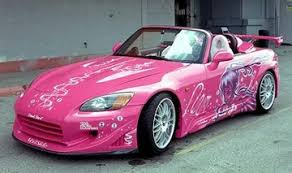
🔍 Klikni pro celé informace
Čistokrevný roadster, který dostal jeden z nejúžasnějších atmosférických motorů všech dob – F20C. Tento motor točí neuvěřitelných 9000 otáček za minutu a po dlouhou dobu držel rekord v nejvyšším specifickém výkonu na litr objemu bez přeplňování.
| Motor: | Řadový čtyřválec (F20C VTEC) |
| Objem: | 2.0 litru (Atmosférický) |
| Výkon: | 177 kW / 240 koní |
| Pohon: | Pohon zadních kol (RWD) |
| Převodovka: | 6-stupňová manuální |
🍃 Mazda MX-5 Miata (NB)
1998 – 2005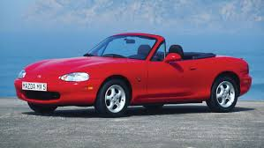
🔍 Klikni pro celé informace
Druhá generace nejprodávanějšího roadsteru na světě sice přišla o mrkačky, ale přinesla tužší karoserii a lepší aerodynamiku. Miata NB je ztělesněním filozofie Jinba Ittai (splynutí jezdce a koně) – není extrémně rychlá v přímce, ale v zatáčkách je geniální.
| Motor: | Řadový čtyřválec (BP-4W) |
| Objem: | 1.8 litru (Atmosférický) |
| Výkon: | 103 kW / 140 koní |
| Pohon: | Pohon zadních kol (RWD) |
| Převodovka: | 6-stupňová manuální |
🦈 Nissan 350Z (Z33)
2002 – 2009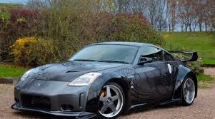
🔍 Klikni pro celé informace
Návrat legendární řady „Z“ od Nissanu na začátku tisíciletí. 350Z nabídl klasický koncept: poctivý atmosférický vidlicový šestiválec VQ35 pod dlouhou kapotou, manuál, pohon zadních kol a mechanický samosvor. Ideální nářadí pro jízdu bokem.
| Motor: | Vidlicový šestiválec (VQ35DE) |
| Objem: | 3.5 litru (Atmosférický) |
| Výkon: | 206 kW / 280 koní |
| Pohon: | Pohon zadních kol (RWD) |
| Převodovka: | 6-stupňová manuální |
🔮 Nissan Silvia S15 (Spec-R)
1999 – 2002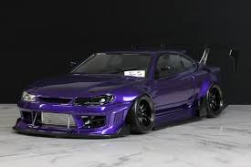
🔍 Klikni pro celé informace
Nejvybroušenější a poslední generace modelové řady Silvia. Verze Spec-R dostala přeplňovaný motor SR20DET, vylepšené nárůsty tuhosti karoserie a přepracované řízení. Pro driftery po celém světě je to absolutní ikona.
| Motor: | Řadový čtyřválec (SR20DET) |
| Objem: | 2.0 litru (Turbo) |
| Výkon: | 184 kW / 250 koní |
| Pohon: | Pohon zadních kol (RWD) |
| Převodovka: | 6-stupňová manuální |
🚀 Toyota MR2 (SW20)
1989 – 1999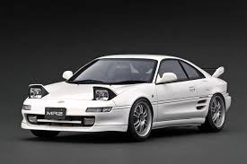
🔍 Klikni pro celé informace
Druhá generace MR2 se díky elegantním tvarům dočkala přezdívky „Ferrari chudých“. Koncepce s motorem uprostřed napříč a pohonem zadních kol poskytovala extrémní agilitu, ale vyžadovala zkušeného řidiče kvůli sklonům k náhlé přetáčivosti (snap oversteer).
| Motor: | Řadový čtyřválec (3S-GTE) |
| Objem: | 2.0 litru (Turbo) |
| Výkon: | 165 kW / 225 koní |
| Pohon: | Pohon zadních kol, motor uprostřed |
| Převodovka: | 5-stupňová manuální |
🌌 Nissan Stagea Autech 260RS
1997 – 2001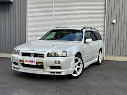
🔍 Klikni pro celé informace
Představ si rodinný kombík, do kterého inženýři namontovali kompletní techniku z legendárního Skyline GT-R R33. Verze upravená dvorní ladičskou firmou Autech má motor RB26DETT, manuální převodovku i špičkovou čtyřkolku ATTESA E-TS.
| Motor: | Řadový šestiválec (RB26DETT) |
| Objem: | 2.6 litru (Twin-Turbo) |
| Výkon: | 206 kW / 280 koní |
| Pohon: | 4WD (ATTESA E-TS) |
| Převodovka: | 5-stupňová manuální |
🤍 Honda Civic Type R (EK9)
1997 – 2000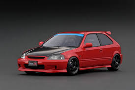
🔍 Klikni pro celé informace
Vůbec první Civic, který si zasloužil odznak Type R. Dostal ručně portovaný motor B16B, který točil až 8200 otáček a produkoval neskutečných 185 koní z pouhé atmosférické jedna-šestky. Auto vážilo jen 1050 kg a chovalo se jako motokára.
| Motor: | Řadový čtyřválec (B16B VTEC) |
| Objem: | 1.6 litru (Atmosférický) |
| Výkon: | 136 kW / 185 koní |
| Pohon: | Pohon předních kol (FWD) |
| Převodovka: | 5-stupňová manuální |
💎 Mitsubishi Eclipse GSX (G2)
1995 – 1999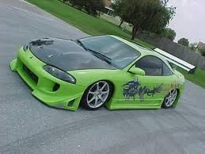
🔍 Klikni pro celé informace
Druhá generace Eclipse proslula hned na začátku prvního dílu filmu Rychle a zběsile. Špičková verze GSX ale na rozdíl od filmové verze nabízela stálý pohon všech čtyř kol (4WD) a legendární motor 4G63T sdílený s modely Lancer Evolution.
| Motor: | Řadový čtyřválec (4G63T) |
| Objem: | 2.0 litru (Turbo) |
| Výkon: | 154 kW / 210 koní |
| Pohon: | Stálý pohon všech kol (AWD) |
| Převodovka: | 5-stupňová manuální |